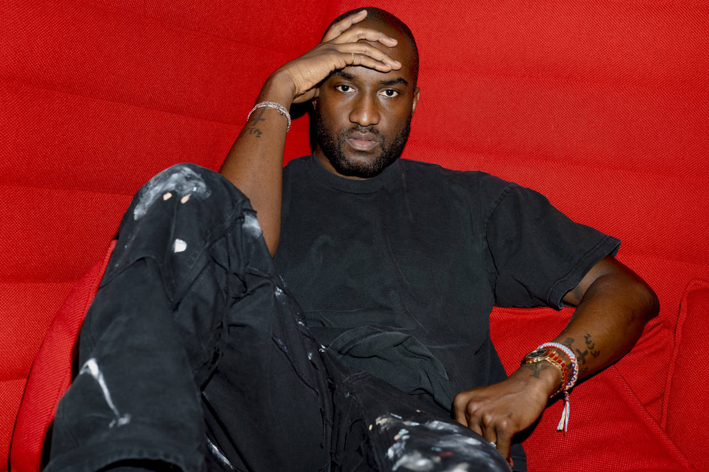

Virgil Abloh

American designer, DJ and stylist Virgil Abloh came to prominence as Kanye West 's creative director, but has since made waves in the fashion world with his luxury streetwear label, Off-White, and appointment as artistic director of menswear at Louis Vuitton in March 2018. "This opportunity to think through what the next chapter of design and luxury will mean at a brand that represents the pinnacle of luxury was always a goal in my wildest dreams," he said of his appointment.